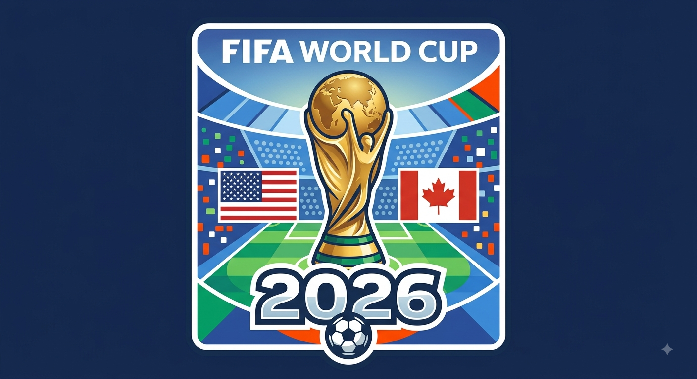

A história da Copa
Por:Joice Chimiloski
A primeira Copa do Mundo aconteceu em 1930, após muitos anos de tentativas de se organizar uma competição mundial de futebol. O início do evento está diretamente ligado ao surgimento da Fifa e sua atuação na popularização e profissionalização do futebol.
A Copa do Mundo é o maior torneio de futebol do planeta. Criada pela FIFA em 1930, a competição ocorre a cada quatro anos. O torneio reúne as melhores seleções nacionais e atrai bilhões de espectadores.
A Copa do Mundo de Futebol é o maior evento esportivo do planeta. Ela une bilhões de pessoas, mexe com a economia global, aproxima culturas diferentes e cria memórias afetivas inesquecíveis para países inteiros.

A Copa de 2026
Por:Joice Chimiloski
A Copa do Mundo de 2026 marcou a história do futebol por ser a primeira a ser realizada em três países diferentes — Canadá, Estados Unidos e México — e a contar com um recorde de 48 seleções participantes. O torneio apresentou um novo formato com 12 grupos de quatro equipes e um total de 104 partidas disputadas em 16 cidades-sede
A competição trouxe surpresas e novidades, incluindo seleções estreantes e confrontos intensos ao longo de mais de um mês de disputa entre 11 de junho e 19 de julho. A Seleção Brasileira avançou da fase de grupos, mas acabou sendo eliminada pela Noruega nas oitavas de final.
A inesquecível final da Copa do Mundo de 2026 ocorreu no MetLife Stadium, em Nova Jersey, no dia 19 de julho. A seleção da Espanha sagrou-se bicampeã mundial ao vencer a Argentina por 1 a 0 na prorrogação, coroando uma das edições mais grandiosas e lucrativas do espetáculo da FIFA.